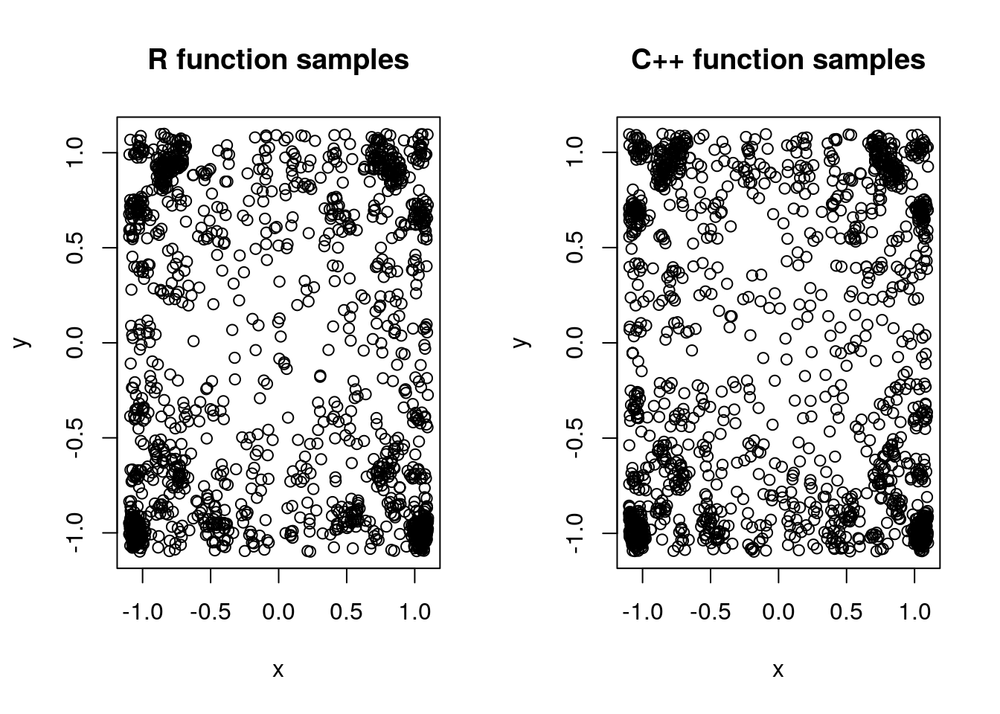
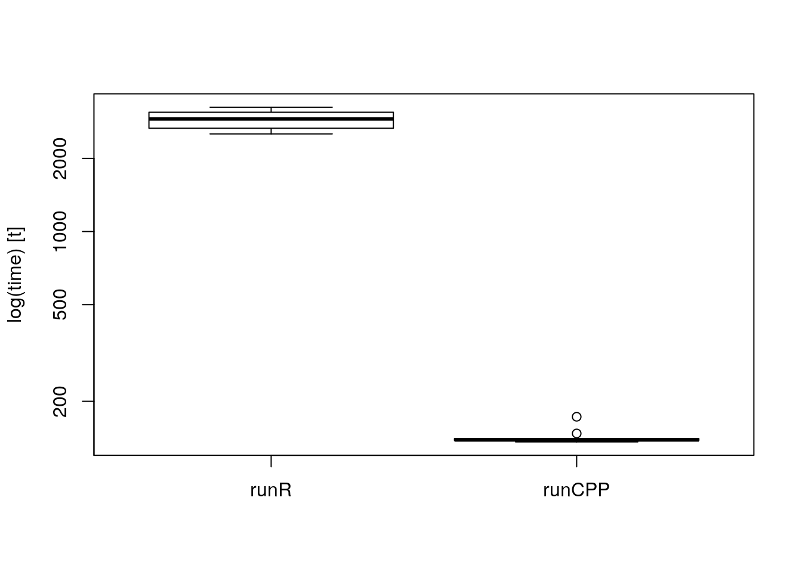
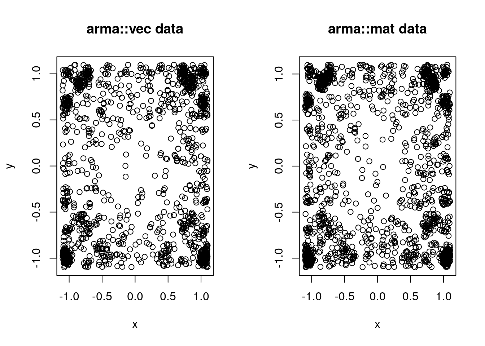
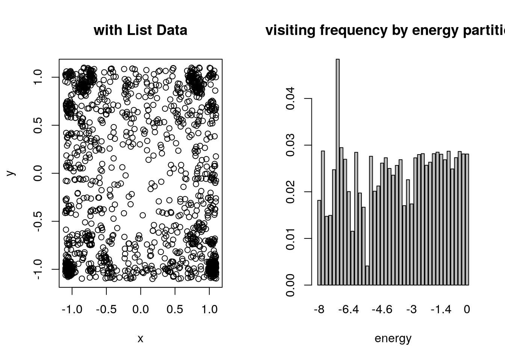
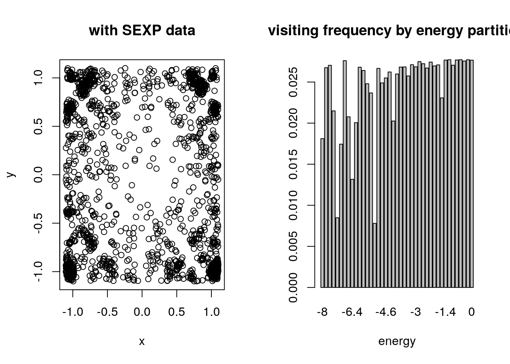

The function SAMC helps users to build a SAMC sampler easily. However, the main part of our implementation requires numerous evaluations of an energy function at each iteration, which becomes a critical bottleneck in computational aspect. SAMCPLUS exploits a generic framework for passing user-provided C++ functions to our backend. We will use two-dimensional multimodal example (Liang, Liu, and Carroll 2010) to introduce details on how to boost your computation using XPtr.
The problem is to sample from a multimodal distribution \(f(x) \propto \exp\{-H(x)\}\), where \[
\begin{eqnarray}
H(x) = &-\{x_1 \sin(20x_2) + x_2 \sin(20x_1)\}^2 \cosh\{\sin(10x_1)x_1\} \\
&- \{x_1 \cos(10x_2) - x_2 \sin(10x_1)\}^2 \cosh\{\cos(20x_1)x_1\}
\end{eqnarray}
\] with domain \((x_1,x_2) \in [-1.1,1.1]^2\). Before we start in detail, let’s define an options list containing other parameters for our problem.
myoption = list()
myoption$partition = c(-Inf,seq(from=-8,to=0,length.out=41)) # energy partition
myoption$tau = 1.0 # temperature
myoption$domain = c(-1.1,1.1) # domain for sample space
myoption$vecpi = as.vector(rep(1/41,41)) # desired sampling distribution
myoption$niter = 200000 # total number of iterations
myoption$stepsize = 0.25 # s.d for random-walk proposalFirst, define a corresponding R function func_r that evaluates \(H(x)\),
func_r = function(x){
x1 = x[1]; x2 = x[2];
val1 = (-(x1*sin(20*x2)+x2*sin(20*x1))^2)*cosh(sin(10*x1)*x1);
val2 = (-(x1*cos(10*x2)-x2*sin(10*x1))^2)*cosh(cos(20*x2)*x2);
return(val1+val2);
}Let’s make a C++ function that does the same job,
library(RcppXPtrUtils)
cppscript = "SEXP funcH(arma::vec x){
double x1 = x(0);
double x2 = x(1);
double val1 = (-std::pow((x1*sin(20*x2)+x2*sin(20*x1)),2))*cosh(sin(10*x1)*x1);
double val2 = (-std::pow((x1*cos(10*x2)-x2*sin(10*x1)),2))*cosh(cos(20*x2)*x2);
return Rcpp::wrap(val1+val2);
}"
func_ptr = RcppXPtrUtils::cppXPtr(cppscript,depends="RcppArmadillo") # as a pointerConventional wrapping of a C/C++ chunk usually returns a wrapper that directly calls the compiled function from R. However, cppXPtr now returns an XPtr object, which is an R’s traditional externalptr wrapped into a XPtr class.
First observation should be whether two operations result in nearly identical samples.
library(SAMCpack)
res1 = SAMC(2,func_r,options=myoption) # use R function
res2 = SAMCPLUS(2,func_ptr,options=myoption) # use C++ functionThen, we can see that these two results are compatible,  where first 100 runs are disregarded and 1/100 thinning is applied.
The most critical reason to use SAMCPLUS would be execution time. We ran each 10 times.
library(microbenchmark)
execution = microbenchmark(
list = alist(
runR = SAMC(2,func_r,options=myoption),
runCPP = SAMCPLUS(2,func_ptr,options=myoption)
), times=10
)and the boxplot below shows a large gap between these two methods. 
In the Option 2 of previous section, once a CPP script is written as an inline function, it can be wrapped as XPtr. In order to keep consistency across a variety code snippets and minimize potential error, we decided to impose some restrictions.
SEXP, short for S-Expression, as in SEXP function(...).arma::vec object from RcppArmadillo, representing random variable \(x\).data argument of SAMCPLUS. They are should be one ofarma::vec for a vector,arma::mat for a matrix, orListList as your data, type conversion or suitable adjustment may be required.RcppArmadillo is a templated C++ linear algebra library. We believe it balances ease of use like other script computing platform and computational efficiency. For example, most of expressions many statisticians often use involve some degree of numerical operations and RcppArmadillo is definitely one of the optimal options if not the best. For more details about the library, please see the introductory vignette.
As noted before, we made three options available when the compiled C++ function needs to use external data - vector(arma::vec), matrix(arma::mat), and List(Rcpp::List).
We will still use the same example. First, let’s consider a case to use a vector-valued data. In our example, let’s call a vector \(data\_vec=(10,20)^\top\). In this case, we can define a C++ function as below.
data_vec = as.vector(c(10,20)) # vector-valued data=(10,20)
cppscript_vec = "SEXP funcH_vec(arma::vec x, arma::vec data){
double x1 = x(0);
double x2 = x(1);
double par1 = data(0); // first element : 10
double par2 = data(1); // second element : 20
double val1 = (-std::pow((x1*sin(par2*x2)+x2*sin(par2*x1)),2))*cosh(sin(par1*x1)*x1);
double val2 = (-std::pow((x1*cos(par1*x2)-x2*sin(par1*x1)),2))*cosh(cos(par2*x2)*x2);
return Rcpp::wrap(val1+val2);
}"Second, let’s assume we have a matrix-valued data, \[ data\_mat = \begin{pmatrix} 20 & 20 & 10 \\ 10 & 10 & 20 \end{pmatrix} \] whose elements are corresponding to the numeric values in a cost function. As before,
data_mat = matrix(c(20,10,20,10,10,20),nrow=2)
cppscript_mat = "SEXP funcH_mat(arma::vec x, arma::mat data){
double x1 = x(0);
double x2 = x(1);
double val1 = (-std::pow((x1*sin(data(0,0)*x2)+x2*sin(data(0,1)*x1)),2))*cosh(sin(data(0,2)*x1)*x1);
double val2 = (-std::pow((x1*cos(data(1,0)*x2)-x2*sin(data(1,1)*x1)),2))*cosh(cos(data(1,2)*x2)*x2);
return Rcpp::wrap(val1+val2);
}"Then, create two XPtr’s from our supplied functions,
func_ptrvec = RcppXPtrUtils::cppXPtr(cppscript_vec,depends="RcppArmadillo") # as a pointer
func_ptrmat = RcppXPtrUtils::cppXPtr(cppscript_mat,depends="RcppArmadillo") # as a pointerand these can be run likewise.
res3 = SAMCPLUS(2,func_ptrvec,options=myoption,data=data_vec) # vector data
res4 = SAMCPLUS(2,func_ptrmat,options=myoption,data=data_mat) # matrix dataand still we can check that the results are compatible. 
Unlike arma::vec and arma::mat, List is a native R and Rcpp object. List may contain multiple elements and for this scenario we will use both vector and matrix data, each. Especially, in this case, we will show how you can use Rcpp native vector and matrix class as well. First, let’s prepare the data.
data_list = list()
data_list[[1]] = as.vector(c(20,10))
data_list[[2]] = matrix(c(20,10,10,20),nrow=2)In the code below, vector and matrix are sequentially extracted using integer index for a list.
cppscript_list = "SEXP funcH_list(arma::vec x, Rcpp::List datalist){
double x1 = x(0);
double x2 = x(1);
NumericVector lefty = as<NumericVector>(datalist[0]);
NumericMatrix right = as<NumericMatrix>(datalist[1]);
double val1 = (-std::pow((x1*sin(lefty[0]*x2)+x2*sin(right(0,0)*x1)),2))*cosh(sin(right(0,1)*x1)*x1);
double val2 = (-std::pow((x1*cos(lefty[1]*x2)-x2*sin(right(1,0)*x1)),2))*cosh(cos(right(1,1)*x2)*x2);
return Rcpp::wrap(val1+val2);
}"If we compile as before and run it, we can check the following results, 
As well known, types of data available in R are indeed just SEXPs, or S-expression. Therefore, for the advanced user, we made SEXP option to be taken care of at the interface level. Below should be a replicate of using vector-type data similar to Case 1, but additional care of type conversion is required.
cppscript_sexp = "SEXP funcH_sexp(arma::vec x, SEXP data){
double x1 = x(0);
double x2 = x(1);
// Wrap the input 'data' as 'datavec' (Rcpp type)
NumericVector datavec = as<NumericVector>(data);
double par1 = datavec[0]; // first element : 10
double par2 = datavec[1]; // second element : 20
double val1 = (-std::pow((x1*sin(par2*x2)+x2*sin(par2*x1)),2))*cosh(sin(par1*x1)*x1);
double val2 = (-std::pow((x1*cos(par1*x2)-x2*sin(par1*x1)),2))*cosh(cos(par2*x2)*x2);
return Rcpp::wrap(val1+val2);
}"Let’s see it ran well,
data_sexp = as.vector(c(10,20)) # vector-valued data=(10,20) to be passed as SEXP
func_ptrsexp = cppXPtr(cppscript_sexp,depends="RcppArmadillo")
res6 = SAMCPLUS(2,func_ptrsexp,options=myoption,data=data_sexp)and the visual inspection also guarantees that it worked well. 
Liang, F., C. Liu, and R. Carroll. 2010. Advanced Markov Chain Monte Carlo Methods: Learning from Past Samples. Wiley Series in Computational Statistics. Wiley.